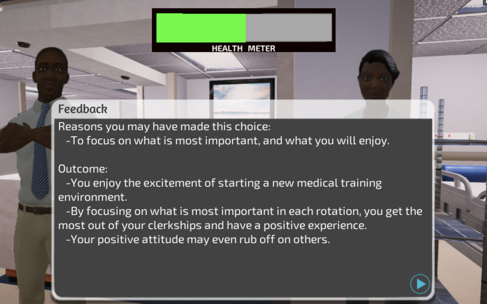

Defining a Serious Game
As a refresher to my last post, I created my own definition for a serious game:
A serious game is a game meant for education or for practice that imitates real-world scenarios in a entertaining, rule-based fashion while creating a rich field for a risk and active exploration of serious intellectual and social problems.
After reviewing my definition and attending another class on serious games, I think my definition is okay (I haven't gotten any critiques so far). So, with this deifnition, I want to add one more element from Chris Palu, senior game designer at Riot Games, when he explained that games have 4 basic components in this 'So You Wanna Make Games? video.
- Goal/Objective to complete
- Opposition
- Decisions
- Rules
Another important concept I need to touch upon are the 4C's. Karen Schrier, author of Using Augmented Reality Games to Teach 21st Century Skills',' defined 4Cs to explain which 21st Century Skills AR taught people. Schrier created an AR game called Reliving the Revolution (RtR). RtR takes place in Lexington, Massachusetts, the site of the Battle of Lexington of the American Revolution. The goal of the game is for participants to “relive” the events of April 19, 1775, and decide who they think fired the first shot at the Battle of Lexington, which remains a mystery today. To do this, game participants explore the present-day Lexington Common and inspect the physical buildings and structures that were involved in the Battle of Lexington. Participants can “talk” to a historic figure such as Paul Revere or Captain John Parker and inspect a game item or real building. The participants play the game in pairs to solve the mystery.
The first and second C is Communication and Collaboration. In Shchrier's study, since the participants played the games in pairs, they needed to constantly articulate to each other their interpretations of the evidence they gathered, explore hypotheses, and share testimonials and documents to put the pieces together. The role-specific mini-objectives or “secret missions” encouraged participant pairs to share information with other pairs, since they often needed information from others to complete their objectives. Each role received distinct information, so they relied on other roles to fill in gaps, corroborate findings, or expose discrepancies in stories. The game taught a 21st Century Skill of collaboration and communication. In collaboration, there is communication. Both I believe, cannot exist without each other.
The third C is Critical Thinking. In Shchrier's study, players had to solve the game’s objectives, participants needed to identify biases in the evidence, question authorial intent, relate information to other data, and respect the limitations of their interpretations. Ultimately, all these skills made these players problem solvers.
The last C is Creativity. The game Schrier created encouraged creativity. Participants created narratives or innovative connections among data. Participants were motivated to seek out new information and even help each other learn. In terms of collaboration mixed with creativity, participants shared their findings and interpretations of evidence with others. After playing the game, they were curious to find out who actually fired the first shot.
Speaking of creativity, the last thing we need to discuss is this research article posted by Stephen Noonoo, 'Playing Games Can Build 21st-Century Skills. Research Explains How.' Noonoo spoke with Katie Salen, game designer, theorist, and former executive director at the nonprofit Institute of Play, on a game she helped develop and open in Manhattan middle school. The games Salen helped develop were under a project at the Institute of Play called Quest. Quest was a gamified version of Socratic Seminars or challenged kids to design a safe transport into the earth’s crust during science class to name a few. To make these Quests meaningful, those Socratic Seminars became Socratic Smackdowns, where students earned points based on how well they structured arguments. Of course, these are just examples of the many games played but these Socratic Seminars or creative design games to discover the earth's crust proved to show some real results in critical 21st Century Skills.
A highly-competitive game can build persistence and collaboration as players work through solutions in order to win like Schrier’s study. A multiplayer role-playing game poses challenges that require players to work together, setting the stage for collaborative problem solving. Kids who design their own cities using simulation games may show stronger problem-solving abilities than peers learning about cities in more traditional ways. In fact, in 2016 two researchers at Clemson University in South Carolina noticed that the most successful games in the analysis were ones where students had to actually create something themselves. The researchers called them design-based games, and noticed that the games that students spent only 10% playing the game while the rest of their time was spent creating features for the game, mapping out theories, and working with others. Similar to Schrier's study, the gamers seemed to be more creative outside the game than inside the game. The games only kickstart learning.
Let's apply these concepts to our game.
How does all this relate to 'Burnout?'
I played Burnout. Burnout's bio is here:
"Burnout is a growing problem in medical schools, affecting up to 50% of students. Effective remedies are available and just need to be applied. Game-based learning delivers targeted, realistic, interactive narratives to help affected students learn to cope. Hands-on scenarios deepen medical student understanding of how to address and overcome burnout during game-play and beyond."
The burnout game fit my definition of a serious game because it was a is a game meant for education or for practice that imitated real-world scenarios of medical school in a entertaining, rule-based fashion while creating a rich field for a risk and active exploration of serious intellectual and social problems about burning out. It also fit Chris Palu's 4 basic principles.
- Goal/Objective to complete
- The Goal is to reduce stress to reduce your chances of burning out in medical school or feeling mentally exhausted.
- Opposition
- The opposition are the characters you interact with who may present an obstacle to you. For instance, in the first scene you are greeted negatively by your teachers. How do you respond to that?
-
Decisions
- There are decisions to make that either support or worsen your situation. Do you act friendly to the negative welcome party or do you believe they hate you? (See image below for demonstration)
- Rules
- There are rules, you want to make the best possible decision for your mental health. There are decisions to make. You cannot make your own repsonses and must pick on the choices given.
So, does this game fit Shrier's 4 C's?
- Communication
- I feel like this subjective to the player. Although this is a one-player game, it can be a multiplayer game if you play this game with friends. However, this game does not set the stage for communication among other players.
- Collaboration
- Once again, this is subjective because it can be played with multiplayers. However, this game does not set up the environment to be collaborative.
-
Critical Thinking
- There are decisions to make that either support or worsen your situation. So, critical thinking is set up in this game environment. It requires a player to identify biases in the reactions and question character intent.
- Creativity
- This game does not set up an environment to create one's decisions nor any other creations. This is not the environment to be creative. However, I believe answering this is also subjective. If a player become curious about how to handle burnout's after this game, then they will be creative in finding their own solutions.
So, what 21st century skills does Burnout offer? I believe it offers critical thinking skills and possibly the skill of creation. Burnout offers the environment to keep learning about mental health issues and how to overcome them. I can see players being curious after this game and making their situations 'gamified' to avoid burning out. Every decision made in the game requires critical thinking to make sure the player's stress levels are low. Below is an example of an answer I picked when playing the game.
Screenshot of The ResultAs you see, the game even offers feedback to why you may have chosen a decision and why this decision may be good or bad. In Noonoo's article, he explains that successfull serious games teach broader skills that go beyond content-level knowledge. The way games do this is by providing feedback or successive challenges. In ‘Burnout,’ the feedback created an environment to learn by doing and reflection.
Overall, I feel like 'Burnout' was too short because there was only one round. I believe if the developer had more support or time to put into the game, it could be widely used. Until then...onto the next game!
Noonoo, S. (2019, February 12). Playing Games Can Build 21st-Century Skills. Research Explains How. - EdSurge News. Retrieved from https://www.edsurge.com/news/2019-02-12-playing-games-can-build-21st-century-skills-research-explains-how
[Riot Games]. (2018, Decemeber 13) So You Wanna Make Games?? | Episode 10: Game Design [Video File]. Retrieved from https://www.youtube.com/watch?v=yYYtBFSxoCg
Schrier, K. (2006). Using augmented reality games to teach 21st century skills. ACM SIGGRAPH 2006 Educators Program on - SIGGRAPH 06. doi: 10.1145/1179295.1179311